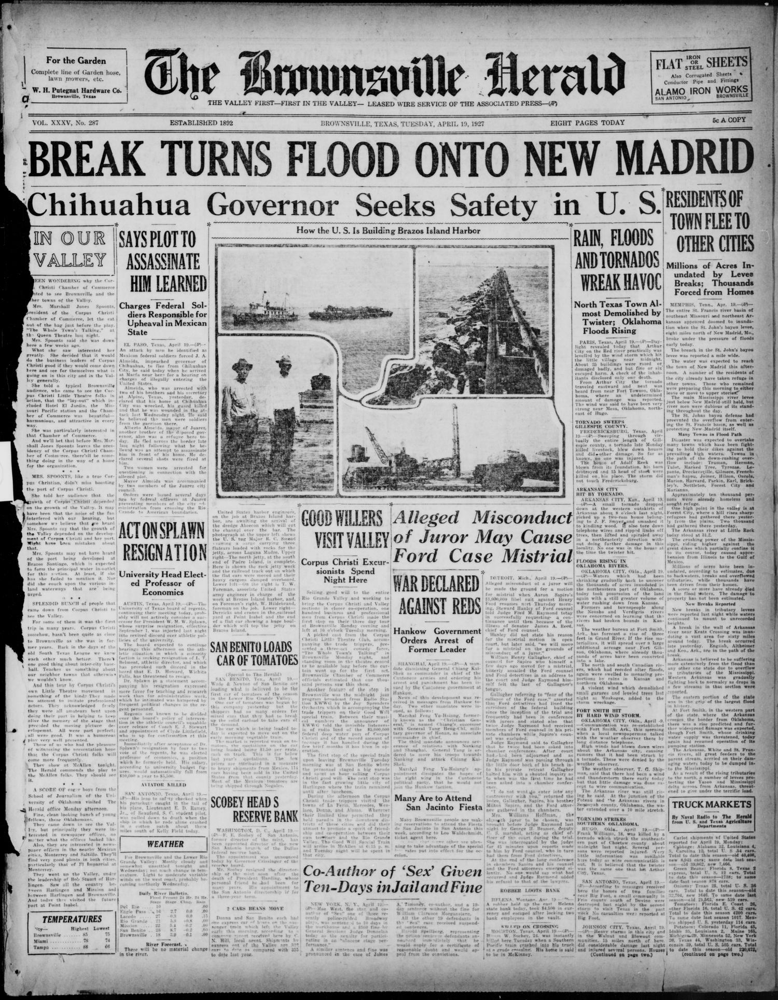

HN-451: Mississippi floods already displace thousands
HN-451 · April 18, 1927 · Disasters, Accidents & Emergencies > Floods, Tsunamis & Extreme Weather > River floods

page scanRecorded finding
Discovery narrative
Source: Indianapolis Times, p. 1 — original page; National Weather Service Mississippi River flood history.
Report: During the expanding Mississippi River floods, an early dispatch put the homeless at roughly 22,000 and emphasized uncertainty about deaths as levees and tributaries failed.
Assessment: The Great Mississippi Flood of 1927 became a much larger catastrophe: the National Weather Service records 246 deaths and more than 700,000 people left homeless. The April 18 article captures an early stage of a months-long crisis, not its full toll or the displacement and racial inequities in relief that followed.
Original archive images (3)
Authentic images retrieved from The Portal to Texas History (University of North Texas), Hoosier State Chronicles (Indiana State Library) and Marxists Internet Archive (Daily Worker). Article crops are located using the archive's own OCR word coordinates and rendered at native crop resolution; article clips are assembled from the archive's own article-block images; page images marked "archive tiles" are stitched from the archive's own tiled page service at its 256-px tile cap; page images marked "issue PDF" are single pages rasterised from the archive's own issue PDF, with the page chosen by matching the headline against the PDF's text layer; page scans are reduced-size access renditions. No images were generated, mocked, or retouched.

The Portal to Texas History (University of North Texas)
Open larger view · Archive viewer (full resolution)

Hoosier State Chronicles (Indiana State Library)
Open larger view · Archive viewer (full resolution)

Marxists Internet Archive (Daily Worker)
Open larger view · Archive viewer (full resolution)
Source acquisition
Status: Archive images acquired
Authentic archive-owned image renditions were retrieved for this record and are displayed above. The source-acquisition manifest preserves the original pre-acquisition feasibility assessment.
Original seed
URL (preserved verbatim): https://newspapers.library.in.gov/?a=d&d=IPT19270418.1.1
Saved research report: Historical_Newspaper_Event_Research_428-452_2026-10-23.md
Evidence note: A newspaper report means a historical publication made a claim; it does not establish that claim as fact. Contemporary reporting is separated from later scholarly context and our own assessment.